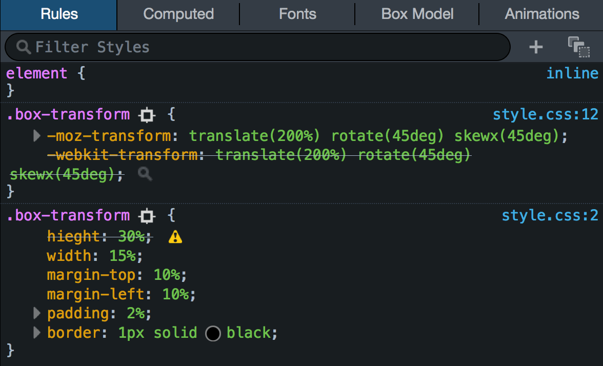

Html
HTML significa Hypertext Markup Language, que em português pode ser traduzido como Linguagem de Marcação de Hipertexto. É uma linguagem de marcação utilizada para estruturar o conteúdo e definir a aparência de páginas da web. HTML é a base fundamental da maioria dos sites na Internet e é interpretado pelos navegadores para exibir o conteúdo de forma adequada aos usuários. Ele permite a criação de links, formatação de texto, inserção de imagens, vídeos, áudio e outros elementos multimídia, além de oferecer suporte a formulários interativos e outros recursos,Você pode saber mais sobre html
Aqui uma imagen de códigos HTML

CSS
A sigla CSS significa Cascading Style Sheets, que em português pode ser traduzido como Folhas de Estilo em Cascata. O CSS é uma linguagem de estilo utilizada juntamente com o HTML para definir a aparência e o layout de uma página da web. Enquanto o HTM é responsável pela estrutura e conteúdo da página, o CSS é utilizado para controlar a apresentação visual, como cores, fontes, tamanhos, posicionamento de elementos e outros aspectos visuais. O CSS permite separar o estilo do conteúdo, facilitando a manutenção e atualização do design de um site. Ele funciona aplicando regras de estilo a elementos HTML usando seletores. Com o CSS, é possível criar estilos consistentes e personalizados para diferentes dispositivos e tamanhos de tela, garantindo uma experiência visualmente agradável para os usuários. Além disso, o CSS também oferece recursos avançados, como animações, transições e responsividade, para criar interfaces mais dinâmicas e interativas.
Aqui está uma imagem simples sobre codigos em css

Javascript
JavaScript é uma linguagem de programação de alto nível, interpretada e executada pelos navegadores da web. Ela foi desenvolvida para tornar as páginas da web mais interativas, permitindo a manipulação do conteúdo e o controle do comportamento dos elementos HTML. JavaScript é amplamente utilizado no desenvolvimento web para adicionar funcionalidades dinâmicas às páginas, como validação de formulários, interações de usuário, animações, atualizações de conteúdo em tempo real e muito mais. Além disso, o JavaScript também é utilizado no desenvolvimento de aplicações web complexas, conhecidas como Single-Page Applications (SPAs), e em diversas outras áreas, como desenvolvimento de jogos, aplicativos mobile, Internet das Coisas (IoT) e servidores (Node.js). O JavaScript é uma linguagem de programação versátil e poderosa, que possui uma ampla variedade de bibliotecas e frameworks disponíveis, facilitando o desenvolvimento de aplicações robustas e escaláveis
Aqui está um exemplo de código javascript

Atualmente essas são as tecnologias mais usadas no mercado de tecnologias,principalmente quando se tratar de programadores front-end,são muito utilizadas pelos seus codigos de facil leitura e de rápido aprendinzado.
Caso queira saber de mais detalhe Clique aqui